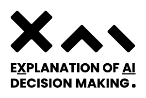

Cookies
A cookie is a small file that can be stored in your browser by the website you are visiting or by other websites who run content on the page you are viewing. When you visit a page of the same website, the cookies are sent back to the website. Some cookies are deleted after your visit (session cookies), others can be stored on your computer for short or long time. Most websites you visit use cookies because cookies are essential in order to improve user experience or to provide features. A different type of cookies, called tracking cookies, can be used to remember who you are or to target advertising messages. Modern browsers usually can also be configured in order to prevent the storage of cookies, to prevent the storage of third party cookies or to you use Do-Not-Track policies, although you might lose some functions of that website.
Cookies usage
The European Union with the Directive on Privacy and Electronic Communications forces each website to declare how cookies are used and to request user's consent for tracking cookies. This website has been designed in order to reduce the use of cookies. No tracking cookies are set by this website, no personal information is collected using cookies and no user profiling is performed.
The types of cookies set by this website are:
- Session Cookies Session cookies are stored during the visiting session and are deleted at the end of the session.
- Feature Cookies Feature cookies are strictly necessary in order to allow you to visit this site or are used for different purposes e.g. authentication, statistics.